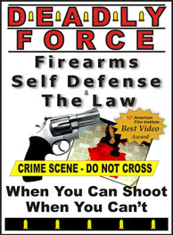

|
On Tuesday, March 18, 2003, then Colorado Governor Bill Owens signed into law a bill that was 10 years in the making, Senate Bill 24, which allows for concealed carry of a handgun. Now Colorado residents 21 years and older who pass a criminal background check, obtain the mandated handgun training and pay the required fees will receive a five-year permit to carry a concealed handgun. Now many of us can legally exercise our constitutional right bear arms. As one who teaches serious martial arts to adults, I actually encourage our students to get a permit – whether they ever carry a handgun or no. 1 I do this because to me, a martial artist is one who is skilled in as many methods and means of self-defense as possible – including firearms. 2 Although comfortable with firearms since I was 10 years old, and despite the extensive weapons training I received in the United States Marines, I decided long ago not to incorporate firearms instruction into our school's curriculum. Instead, I refer my students to qualified firearms instructors. For my own instruction, I took Mark Passamaneck's DFUSE ("Defensive Firearms Use and Safety Education") course. This was more than just a How to Draw and Shoot (Without Shooting Yourself in the Foot), and it was much, more than a hunter safety course. In fact, it was comprehensive enough to really scare me. Throughout the class I kept asking myself, "Do I really want to carry a handgun, a lethal weapon?" The financial burden alone, should you even justifiably shoot anyone and have to defend yourself in court, is enough to make you think twice about carrying a gun. By this time I wasn't sure I really wanted to. |
|
 |
The course, complete with written exam, live-fire range instruction and
a final shooting test, covered 22 topics related to Concealed Carry Weapons (CCW), including
personal responsibility, liability, gun laws, development and maintenance of shooting skills,
personal responsibility and liability, shooting tactics, personal responsibility and liability
and daily carry issues. 3
And did I mention personal responsibility and liability?
The classroom portion of the instruction included multimedia presentations, workshops and talks from law enforcement, attorneys (both prosecution and defense) and a state representative, as well as the firearms trainers. Range instruction and the shooting test that followed were held in separate small-group sessions. That day each participant fired approximately 200 rounds (70 for the shooting test alone). After receiving the required instruction and paying the necessary fees, I applied for my permit at the county sheriff's office. Eighty-seven days later (by law the county sheriff had 90 days to issue or decline) I received my permit. 4 |
|
On hearing my endorsement of concealed carry and learning about the training
I received, some of my students and friends were curious. Why, with going on 50 years of
martial art training (including weapons), would I, of all people, need or want to carry a firearm,
they wondered. I could see the skepticism in some of my student's faces as they asked
themselves, "Is this [martial arts] stuff really any good if the teacher himself is considering
carrying a gun?"
First, I reminded them that I never said I would carry a gun. Only that I took the training and applied for a permit. I also said that, as a martial arts teacher, I encourage my students (again, we teach only adults) to do the same – especially in light of the fact that the police have no duty to protect individuals. 5 Whether they choose to carry a handgun or not, the information about concealed carry – particularly the personal responsibility and liability issues – makes such training well worth the money. Much of the information provided is equally applicable to the empty-hand and other practical weapons training our students receive in class. 6 |
|
As far as the efficacy of martial art training in light of the fact that it's now legal to carry a concealed handgun in Colorado, let me say this: carrying a gun without equal skill in unarmed self-defense is like the man who drives a car that has only one speed, 100 miles per hour. His car is incapable of going 75, or 55 or even 35; 100 mph is the only option (try parking that thing)! Applying this analogy to concealed carry, when conflict arises, the individual who carries a gun but lacks sufficient unarmed self-defense skills has very few options. 7 |
Carrying a gun without equal skill in unarmed self-defense is like the man who drives a car that has only one speed: 100 miles per hour. |
|
Assuming you, as a law-abiding CCW course participant, elect to continue your training and become reasonably competent in your shooting and gun handling skills (a very good idea, by the way), what are your options when an obnoxious, verbally abusive and threatening individual wags his finger in your face, all the while spewing obscenities? What if that person happens to be your brother-in-law? Obviously, the first thing anyone should do is try to defuse the situation, but what if that is not possible? Worse, what if you cannot get away from the guy? You are trained with that lethal weapon you carry, but you cannot use it because your life has not been seriously threatened. Moreover, your permit is for concealed carry, so you cannot show your weapon in the hope of intimidating him. That's brandishing – and the surest way to lose your permit – not to mention being pretty stupid (OK, probably not so "pretty"). The fact is, without an equal level of competence in practical, less-than-lethal empty-hand self-defense skills, you are really out of options. Oh, you can tell yourself later, "If he only knew just how close he came to . . ." To what? The fact is, the whole situation is likely to stick painfully in your craw for a long, long time. Carrying a gun makes you safer, to be sure, but only in the most limited and extreme circumstances. Most hostile confrontations never escalate to that level. As a full-time martialist and life member of both
Gun Owners of America (GOA)
and the National Rifle Association (NRA), I am intimately involved with the concealed carry issue
and have been for a good number of years. I can say, therefore, without fear of successful
contradiction, that 98 percent of those carrying concealed handguns have no real martial art training.
Nor are they likely to pursue any – despite the fact that responsible firearms instructors recommend
that everyone take some kind of self-defense course (unfortunately, most of the same firearms instructors
do not take their own advise). This means that the overwhelming majority of those carrying a handgun
remain incapable of dealing with 99+ percent of the hostile situations they may encounter.
In fairness, I understand the permit holder's (and firearms instructor's) reluctance to get into "martial arts". The images of the martial arts they see most often involve Hollywood actors dodging slow-motion bullets and 9 year-old black belts pouring out of the local MacDojo's. Neither image instills much confidence when it comes to real world confrontations and fights. So what can legitimate martial art instructors do about that? First, recognize that, much like CCW permit holders who are skilled in the use of firearms but have no martial arts training, we are incomplete as martial artists unless we are sufficiently skilled in firearms use and carry. (How can any martial arts instructor advise his students about such things if he lacks knowledge in that area?) In the process of receiving such training, you'll meet some fine firearms instructors and shooters, and gain greater insights into self-defense. As opportunities a rise, show these new friends what real martial arts are all about. Win them over – even if only one man or woman at a time. Only then will we see CCW permit holders whose cars can be driven at all speeds – not just 100 mph. So, am I carrying a handgun now that I have my permit? I can't say. It is, after all, a concealed carry permit. Telling anyone you're "carrying" takes the "concealed" out of concealed carry now doesn't it. |
|
Meets Criminal Reality Friday, May 25, 2007 A May 15th story in The Plain Dealer (Cleveland, Ohio) serves as an excellent reminder of how a person's support for gun control often changes after a personal experience with crime. State Representative Michael DeBose (D-12) of Cleveland was an opponent of Right-to-Carry, having voted against the measure twice. All that changed on the night of May 1st, when he was confronted by two men, one of whom was wielding a gun. On that night, Rep. DeBose's sense of security in his neighborhood changed, as did his view on lawful citizens being able to defend themselves. Rep. DeBose was lucky this time that his running, screaming, and summons
for help prevented him from being harmed. When asked how this recent experience may change the
prism through which he views Right-to-Carry, Rep. DeBose was crystal clear:
"I was wrong. I'm going to get a permit and so is my wife. I've changed my mind. You need a way to protect yourself and your family. I don't want to hurt anyone. But I never again want to be in the position where I'm approached by someone with a gun and I don't have one. 9 There are too many people who are just evil and mean-spirited. They will hurt you for no reason. If more people were packing guns, it might serve as a deterrent." We welcome Rep. DeBose to the growing list of Right-to-Carry converts. While it is too bad it took a life-threatening situation to convert him, we hope he will share his experience, and his newfound respect for the right to self-defense, with his other colleagues who still don't get it. It is our hope they won't have to endure a similar experience to do so.
|
|
Footnotes:
Other Links: |

|
Gun Owners of America The only no-compromise gun lobby in Washington. — Rep. Ron Paul (R-TX) |

|
Firearms & Liberty
Police Have No Duty To Protect Individuals — Essay by Peter Kasler |
|
©Copyright Bob Orlando, 2003-2016 All rights reserved. |
http://www.OrlandoKuntao.com
E-mail: Ron@OrlandoKuntao.com |
Last update:
Aug. 6, 2016 by Bob Orlando |